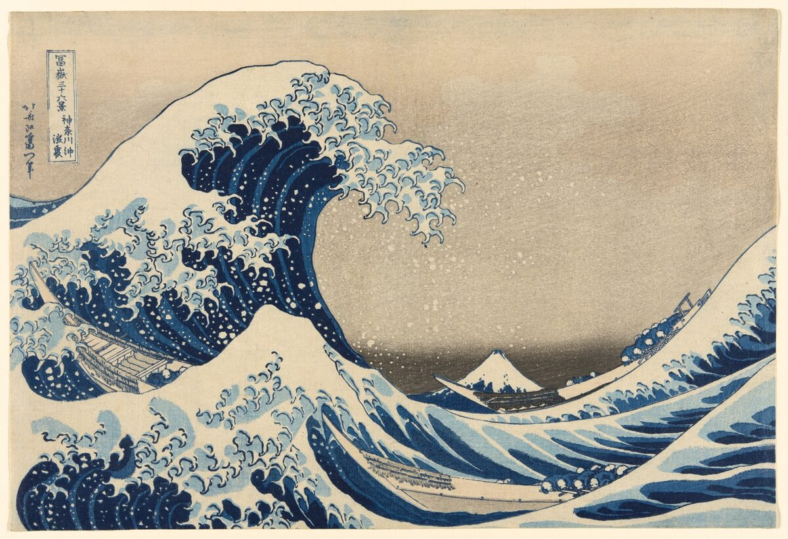

本周新书
从诗集到菜谱，店员每周亲手挑选。
网页设计风格与 AI 提示词生成器
按固定规则混合，不取平均：一个流派当骨架，管排版、字体和动效；另一个当表皮，管配色、质感和母题。每一组还附带给网页插图用的生图提示词。

Constructivism × Ukiyo-e
网页设计风格与 AI 提示词生成器 · 24 种艺术流派
骨架决定排版、字体和动效；表皮决定配色、质感和画面。
实时预览，导出代码提示词、生图提示词、DESIGN.md 和示例 HTML。第一次使用？看教程 →
每张图版讲清一个画派：年代、主张、颜色和质感。看中哪个，点“用作骨架”或“用作表皮”，回到上面的工作台。
这些画派自带一套版面语法：网格怎么分，标题放哪，元素朝哪个方向倾斜。图鉴预览是它们的纯粹形态，骨架和表皮都用自己的。
这些画派的力量在颜色、笔触和画面题材上，没有可以照搬的版面结构，所以要借别人的骨架。色块从左到右是面板色、主色、两个辅色和文字色。
不只认识画派，也看它们怎样变成布局、配色和可执行的提示词。主视觉是 AI 生成的风格示意，不是历史作品的复制。
提供 Pi、Claude Code 和 Codex 版本，共用标准 SKILL.md、24 个流派的数据与混合规则。装好后可以在 Agent 里直接生成 DESIGN.md、代码和生图提示词；技能本身不需要额外 API key。
已装 Node 的话，在终端运行下面这行。skills 命令行会找到本机的 Claude Code、Codex 等 Agent，按提示选择装到哪里。
npx skills add 24kHandsome1201/style-mix
也可以下载技能包手动安装：
三个下载包内容相同，安装目录和调用方式不同；只需安装你使用的版本。下方命令适用于 macOS / Linux，遇到已有技能目录会停止，不覆盖你的修改。
独立书店 · 2026 秋
每周三晚上，我们关掉一半的灯，只留下书和读书的人。
预约到店从诗集到菜谱，店员每周亲手挑选。
二十个座位，一本书，读到打烊。
全年九折，生日送一本店员推荐。